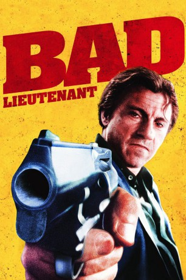

#1468 Bad Lieutenant
 
 IMDB-Wertung: 7.1 / 10
IMDB-Wertung: 7.1 / 10  Metascore: 70
Metascore: 70 
Ein New Yorker Cop: Drogensüchtig, korrupt und wettsüchtig. Ein Wrack. Als eine Nonne von zwei Jungen vergewaltigt wird, werden von der Mafia 50.000 Dollar Belohnung ausgesetzt. Die letzte Chance für den Cop, sein kaputtes Leben wieder unter Kontrolle zu bekommen?
Jahr: 1992
Dauer: 96 Minuten
FSK: 16
Land: USA Studio: Aries FilmsTonspuren:
Untertitel:
Auflösung: 1080p (1920x1080) Größe: 8151 MB
Genre: Krimi, Drama
Regisseur: Abel Ferrara
Drehbuch: Zoë Lund, Abel Ferrara
Soundtrack: Joe Delia
Darsteller:
 Harvey Keitel als The Lieutenant
Harvey Keitel als The Lieutenant Victor Argo als Beat Cop
Victor Argo als Beat Cop Paul Calderon als Cop #1
Paul Calderon als Cop #1 Leonard L. Thomas als Cop #2
Leonard L. Thomas als Cop #2- Frankie Thorn als The Nun
- Paul Hipp als Jesus
 Peggy Gormley als Lieutenant's Wife
Peggy Gormley als Lieutenant's Wife- Stella Keitel als Lieutenant's Daughter
 Vincent Laresca als J.C.
Vincent Laresca als J.C.- Zoë Lund als Zoe
- Bo Dietl als Detective Bo
 Gene Canfield als Detective Gene
Gene Canfield als Detective Gene- Penelope Allen als Doctor
- Eddie Daniels als Jersey Girl - passenger
- Bianca Hunter als Jersey Girl - driver
- Darryl Strawberry als Himself , archive footage, uncredited
- Robin Burrows als Ariane
- Victoria Bastel als Bowtay
- Brian McElroy als Lieutenant's Son, #1
- Frankie Acciarito als Lieutenant's Son, #2
- Dana Dee als Lieutenant's Baby Girl
- Anthony Ruggiero als Lite
- G. Elvis Phillips als Young Cop
- Stephen Chen als Korean Store Owner
- Shawn McClean als Korean Store Hood #1
- John Steven Jones als Korean store hood #2
- Fernando Véléz als Julio
- Joseph Micheal Cruz als Paulo
 Frank Adonis als Large
Frank Adonis als Large- Lambert Moss als Veronica
- Nicholas De Cegli als Limelight Guide
- Larry Mullane als Detective Larry
- Michael A. Fella als Detective Mike
- Michael N. Ciravolo als Detective Michael
- Heather Bracken als Nurse
- Ed Kovens als Monsignor
- Jaime Sánchez als Priest
- Minnie Gentry als Elderly Woman
- Iraida Polanco als Mamacita
- Chris 'Mad Dog' Russo als Radio Announcer #1
- John Clohessy als Radio Announcer #2
- Bruce Murray als Radio Announcer #3
- Bob Murphy als Play-by-play announcer
- Warner Fusselle als Play-by-play announcer
- Phil Neilson als Left Turn
- Nick Macdonald als Man in crowd , uncredited
Datei: X:\1992\Bad Lieutenant (1992, FSK16, 1920x1080).mkv seit 08.07.2015
Festplatte: HD 1992-1995
 Es gibt insgesamt 57 Filme in der Gruppe '1992'
Es gibt insgesamt 57 Filme in der Gruppe '1992'